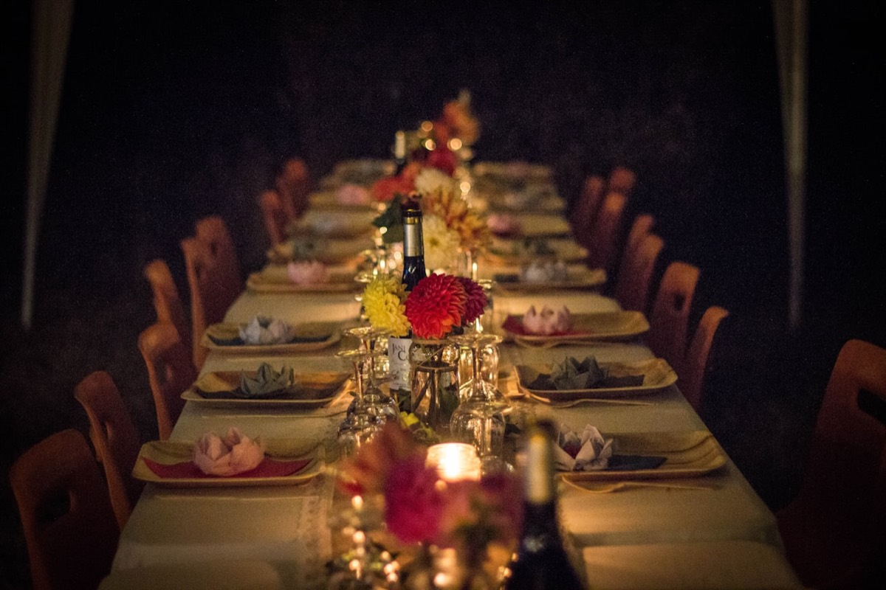
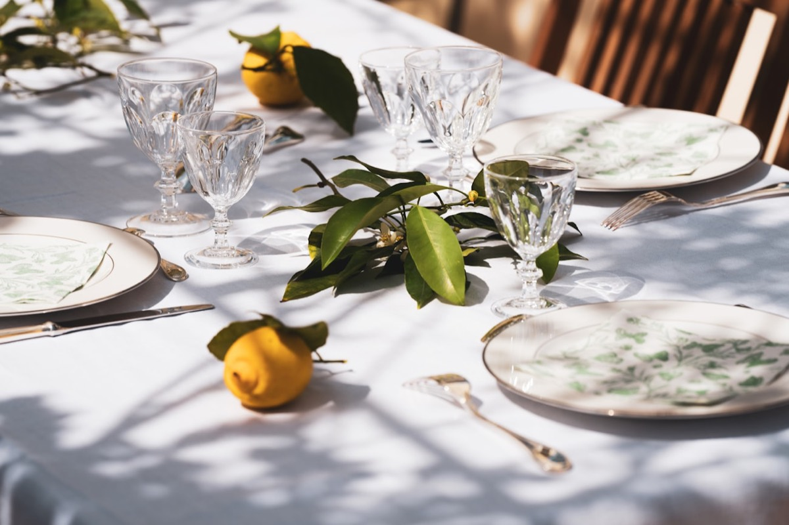
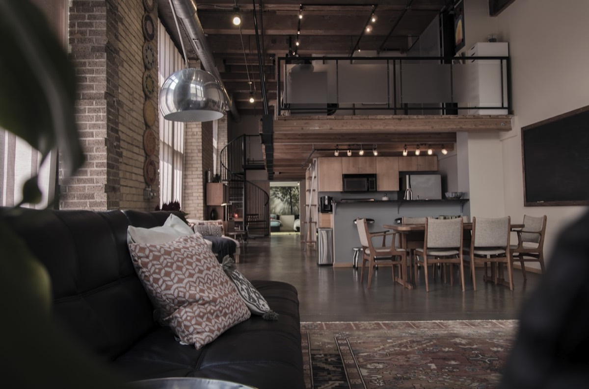
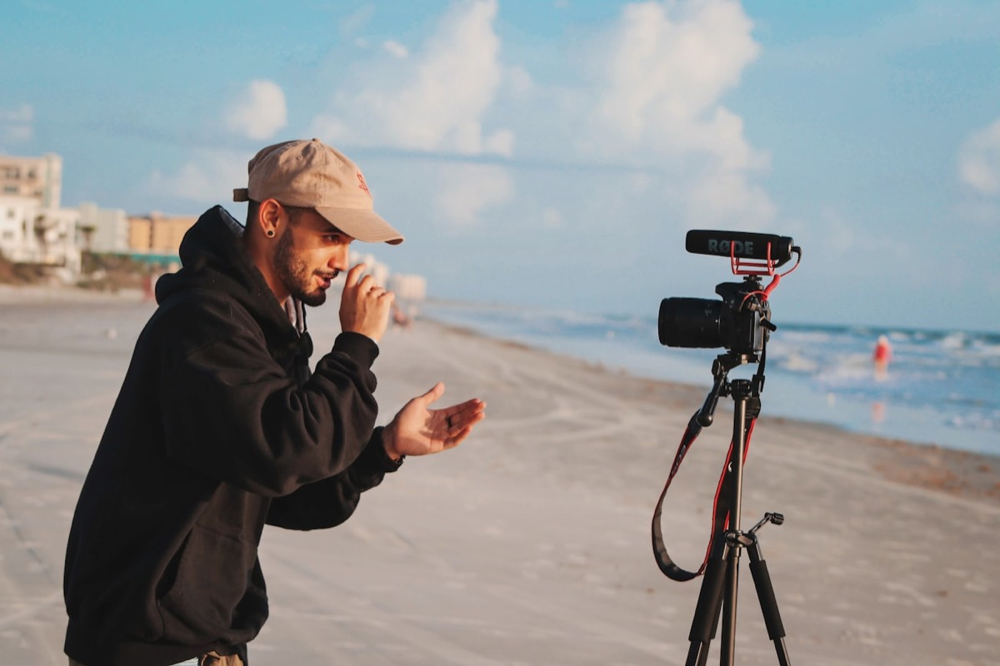

1. AI as production co-pilot
Let's be frank: AI has already changed our job. Not in some TED-talk future, but now, in our March 2026 briefs. And no, we're not replacing project managers with algorithms. We let the machine do what it does best, so we can keep our energy where it really counts: emotion.
First playground: reverse schedules. A brief lands on Monday, the schedule is out by Tuesday morning, dependencies, supplier deadlines and buffers included. What used to eat half a day now takes twenty minutes of proofreading. We put that time back where no AI will ever replace us: art direction, scouting, client relationships.
Second playground: flow prediction. For a 500-guest event, we cross-reference registration data, transport times and weather to anticipate peaks in attendance. We adjust staging, catering and staffing before the big day, not in a 6pm panic. Fewer cold sweats, more flow.
Third playground: a personalised guest journey. Dynamic badges, live session recommendations, matchmaking between attendees by affinity: everyone lives their own event. AI doesn't replace creativity, it multiplies it. At Dare-Dare, that's exactly our line: an accelerator, never an autopilot.

2. The high-impact micro-event
For a long time, an event's success was measured by headcount. 300 guests? Good. 500? Better. 1,000? Jackpot. In 2026, the maths has flipped. The sharpest brands, in luxury, tech and finance, have grasped something simple: fewer people, more value.
A micro-event means 30 hand-picked guests rather than 300 anonymous badges. A dinner somewhere you can't find on Google, a conversation with a world-class speaker, a sensory experience impossible to replicate at scale. And because the scale allows it, everything gets lavished with care: a menu thought through plate by plate, a strategic seating plan, timing to the minute.
Luxury sensed it before anyone else. A collection launch for 25 journalists in an artisan's workshop generates more coverage than an 800-guest party in a palace hotel. Why? Exclusivity creates desire, and desire creates content. Nobody shares on command. People share when they've experienced something rare.
So ROI changes nature. You no longer count heads: you weigh the quality of the relationships formed, the length of conversations, the deals that close in the following weeks. Well produced, a micro-event becomes a conversion machine. And for us it's a golden playground: every detail matters, every moment is choreographed, every guest leaves feeling part of the inner circle.
3. Hybrid that stops pretending
Let's be honest: hybrid, 2021 to 2023 edition, often meant a camera at the back of the room and a Zoom link sent the night before. The online audience sat through a watered-down version of the real evening. In 2026, that era is supposed to be behind us. We'll make sure of it.
True hybrid designs two events from the brief onwards. The room and the screen share a common thread, but each has its own storyline, pace and interactions. The stream isn't a box you tick: it's a second event in its own right, with its own direction, live community management and content the room will never see.
We're seeing formats emerge where the remote audience gets what the room doesn't: backstage interviews, alternative camera angles, exclusive Q&As. Digital stops playing second fiddle and becomes a parallel experience, sometimes richer than the original. The result for brands that really invest: up to 40% more online engagement than with good old "simple filming".
For an agency, that means doubling down: an art director for the room, a director for the stream. More demanding to produce, yes. But the reach is in another league: a 200-person live event can reach 5,000 online, provided the digital side is worth showing up for too.

4. Sustainability as a standard, not a selling point
Three years ago, slipping "sustainable" into a brief was a nice bonus. In 2026, it's a non-negotiable prerequisite. Clients no longer ask "do you do green?". They ask "show me your impact report". Subtle difference.
Zero waste has gone from wishful thinking to method. Reusable tableware, reusable signage, short-supply-chain catering, leftovers redistributed through charities. Every supplier goes through a carbon footprint check before being hired. Local sourcing is no longer an affectation: it's a must, as much logistical as ethical.
As for carbon offsetting, we've put it back in its place: a complement, not an alibi. Serious brands first demand reduction at source (less transport, less new kit, less wasted energy) before even mentioning offsets. And they want figures, not intentions.
At Dare-Dare, it starts at the design stage. Venues chosen for their public transport access, modular staging we reuse, partners within a 50 km radius wherever possible. Sustainability isn't a creative straitjacket: it's a constraint that forces ingenuity. And frankly, some of our most memorable events were born right there.

5. The return of the raw venue
For a long time, "premium" meant palace hotels, crystal chandeliers and deep-pile carpet. In 2026, luxury has changed scenery. The venues everyone is fighting over? Industrial halls, raw rooftops, farm courtyards, artists' studios. Places with a soul, a texture, an imperfection worn with pride.
It's not a passing whim, it's a hunger for authenticity. Fed up with interchangeable function rooms, guests want surprise, a change of scene, the unexpected. A dinner under an industrial glass roof, steel beams on show and light falling at an angle, leaves a different mark from yet another gilded salon.
The beauty of a raw venue is that the venue is the set. Fewer structures, fewer coverings, less camouflage. You work with what's there and reveal it: surgical lighting, minimal but ultra-precise staging. A monumental floral piece in the middle of an empty warehouse hits harder than full décor in an ordinary space.
This is our hunting ground. We track down venues nobody has dared to use yet, wake them up with light and staging, and let their character do the rest. The result: events that are photogenic from every angle, guests who discover a place as much as a brand, and a memory that sinks in much deeper.
Raw venues and immersive sets are worked through event scenography: our method, from brief to dismantling.

6. Built-in native content
In 2026, every event is a content studio. No more afterthought reflex ("we'll grab a few photos"): content is planned from the very first meeting. The guest journey becomes an editorial journey, with moments scripted for capture, spaces designed for photo and video, angles set up for social.
The photocall has mutated too. Out with the logo-riddled roll-up banner: in with immersive installations, interactive green walls, plays of mirrors and light that generate content on their own. Guests no longer pose in front of a backdrop: they live a scene they want to share without being asked.
And content creators become part of the staging. We no longer park them in a corner with a three-post brief: we co-create exclusive moments with them, backstage access, formats cut for their audiences. A TikTok creator doesn't tell the story of an event like a lifestyle journalist does, so it's up to the staging to give each of them the material they need.
In the end, the event keeps producing for weeks. Stories that night, reels the next day, articles the week after, podcasts the following month. Three hours in person turn into six weeks of organic visibility. For a marketing director, that's an ROI no ad spot can match.

Photo: Josephhassane, CC0.
7. The DMC as a strategic advantage
DMC: Destination Management Company. Behind the acronym lies one of the most structural shifts at the high end. In 2026, brands want to step off their usual map: Morocco, Lisbon, Greece, Dubai. And a successful event abroad can't be steered from an open-plan office in Paris. You need a local network. Not a contact dug up on Google, but a real network, woven year after year.
That's what a DMC is all about: an agency that knows the ground, has the right suppliers, masters permits, cultural codes and local logistical traps. Putting on a 100-cover dinner in a Marrakech riad has nothing in common with a restaurant in Paris's 8th arrondissement. Different lead times, different processes, different expectations.
Dare-Dare operates as a DMC in Morocco, and it's one of our sharpest assets. We cover Casablanca, Marrakech, Rabat, Tangier, Fez and Essaouira with teams on the ground, trusted partners and an intimate knowledge of the terrain. A seminar in Marrakech, a launch in Tangier: the same standards as in Paris. Because we don't subcontract. We operate.
That capability changes the whole equation. Instead of juggling three agencies (yours, a local one, a production one) you have a dedicated project lead who holds both the creative vision and the on-the-ground execution. Fewer middlemen, less loss along the way, more coherence. In 2026, the DMC is no longer an optional extra: it's the strategic advantage that wins tenders.
The common thread of 2026
Step back and one thread links these seven trends: 2026 events are smarter, more intimate, more responsible. They all pull in the same direction: more meaning, less excess. More bespoke, less volume. More singularity, less copy-paste.
That's exactly where we stand. Our job isn't filling rooms: it's creating moments that stay with people. Production in the service of emotion, never spectacle for spectacle's sake. If these trends speak to you as much as they do to us, we probably have things to build together.